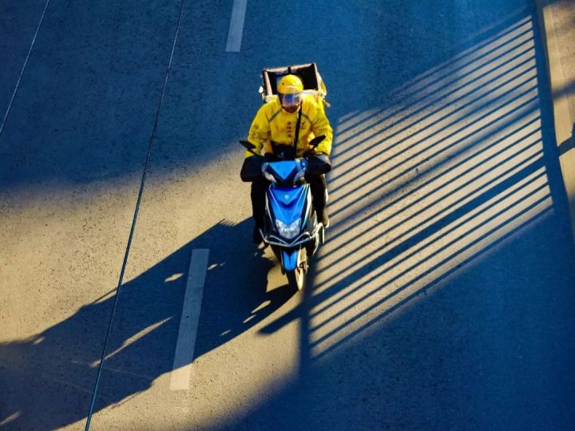
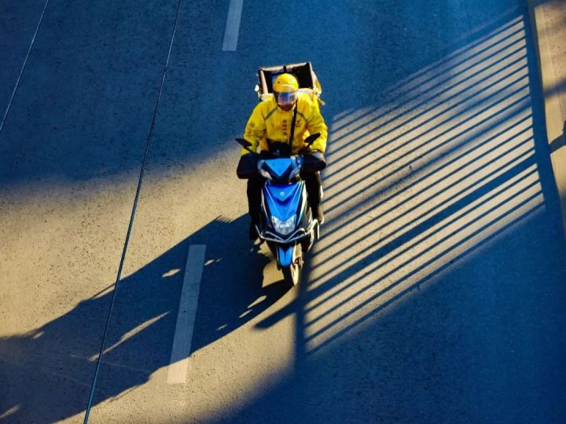

外卖骑手，困在系统里
 
一系列交警部门公布的数据背后，是外卖员已成高危职业的讨论。
一个在某个领域制造了巨大价值的行业，为什么同时也是一个社会问题的制造者？为了找到这个问题的答案，《人物》团队进行了近半年的调查，通过与全国各地数十位外卖骑手、配送链条各环节的参与者、社会学学者的交流，答案渐渐浮现。
文章很长，我们试图通过对一个系统的详细解读，让更多人一起思考一个问题：数字经济的时代，算法究竟应该是一个怎样的存在？
文｜赖祐萱
编辑｜金石
图｜cfp（除署名外）
收到
又有两分钟从系统里消失了。
饿了么骑手朱大鹤清晰的记得，那是2019年10月的某一天，当他看到一则订单的系统送达时间时，握着车把的手出汗了，2公里，30分钟内送达——他在北京跑外卖两年，此前，相同距离最短的配送时间是32分钟，但从那一天起，那两分钟不见了。
差不多相同的时间，美团骑手也经历了同样的时间失踪事件。一位在重庆专跑远距离外卖的美团骑手发现，相同距离内的订单，配送时间从50分钟变成了35分钟；他的室友也是同行，3公里内最长配送时间被压到了30分钟。
这并不是第一次有时间从系统中消失。
金壮壮做过三年的美团配送站站长，他清晰地记得，2016年到2019年间，他曾三次收到美团平台加速的通知：2016年，3公里送餐距离的最长时限是1小时，2017年，变成了45分钟，2018年，又缩短了7分钟，定格在38分钟——据相关数据显示，2019年，中国全行业外卖订单单均配送时长比3年前减少了10分钟。
系统有能力接连不断地吞掉时间，对于缔造者来说，这是值得称颂的进步，是AI智能算法深度学习能力的体现——在美团，这个实时智能配送系统被称为超脑，饿了么则为它取名为方舟。2016年11月，美团创始人王兴在接受媒体采访时表示：我们的口号『美团外卖，送啥都快』，平均28分钟内到达。他说，这是一个很好的技术的体现。
而对于实践技术进步的外卖员而言，这却可能是疯狂且要命的。
在系统的设置中，配送时间是最重要的指标，而超时是不被允许的，一旦发生，便意味着差评、收入降低，甚至被淘汰。外卖骑手聚集的百度贴吧中，有骑手写道，送外卖就是与死神赛跑，和交警较劲，和红灯做朋友。
为了时刻警醒自己，一位江苏骑手把社交账号昵称改成了：超时是狗头。一位住在松江的上海骑手说，自己几乎每单都会逆行，他算过，这样每次能节省5分钟。另一位上海的饿了么骑手则做过一个粗略的统计，如果不违章，他一天能跑的单数会减少一半。
骑手们永远也无法靠个人力量去对抗系统分配的时间，我们只能用超速去挽回超时这件事。一位美团骑手告诉《人物》，他经历过的最疯狂一单是1公里，20分钟，虽然距离不远，但他需要在20分钟内完成取餐、等餐、送餐，那天，他的车速快到屁股几次从座位上弹起来。
超速、闯红灯、逆行……在中国社科院研究员孙萍看来，这些外卖骑手挑战交通规则的举动是一种逆算法，是骑手们长期在系统算法的控制与规训之下做出的不得已的劳动实践，而这种逆算法的直接后果则是——外卖员遭遇交通事故的数量急剧上升。
孙萍从2017年开始研究外卖系统算法与骑手之间的数字劳动关系，在与《人物》的交流中，谈及越来越短的配送时间与越来越多的交通事故的关系时，她表示，肯定是（最重要的原因）。
现实数据有力地佐证了这一判断——2017年上半年，上海市公安局交警总队数据显示，在上海，平均每2.5天就有1名外卖骑手伤亡。同年，深圳3个月内外卖骑手伤亡12人。2018年，成都交警7个月间查处骑手违法近万次，事故196件，伤亡155人次，平均每天就有1个骑手因违法伤亡。2018年9月，广州交警查处外卖骑手交通违法近2000宗，美团占一半，饿了么排第二。


2020年7月28日西安两货车追尾，致一名外卖骑手身亡
#外卖骑手，已经成为最危险的职业之一#,这一话题已经不止一次地登上微博热搜。
在公开报道中，具体的个案远比数据来得更惊心动魄——
2018年2月，一位饿了么骑手为赶时间在非机动车道上超速，撞倒上海急诊泰斗、瑞金医院与华山医院急诊科创始人之一李谋秋，李谋秋抢救1个月之后不幸去世。2019年5月，江西一名外卖骑手因急着送外卖，撞上路人致其成植物人。一个月后，一名成都骑手闯红灯时撞上保时捷，右腿被当场撞飞。同月，河南许昌一个外卖骑手在机动车道上逆行，被撞飞在空中旋转2圈落地，造成全身多处骨折……
被配送时间吓得手心出汗的朱大鹤，也出过事儿，为了躲避一辆自行车，他骑着超速的电动车摔在了非机动车道上，正在配送的那份麻辣香锅也飞了出去，当时，比身体的疼痛更早一步抵达他大脑的是，糟糕，要超时了。
为了避免超时与差评，他打电话给顾客请求对方取消订单，自己掏钱买下了那份麻辣香锅，太贵了，80多块，他说，但味道不错，吃撑了。他至今对此耿耿于怀，因为他当时刚入行，经验不足，更合理的做法应该是，他将这份麻辣香锅的钱付给顾客，让他再下一单，这样，至少能把这趟的配送费给我，他说，6块5，我记得特别深。
摔车的事情太常见了，只要不要把餐洒了，人摔成什么样都不是大事儿。朱大鹤说，跑单的时候，他见到了太多遇到交通事故的同行，一般不会停下来，因为，自己的餐都来不及了。
美团骑手魏莱的经历印证了这种说法。
今年春天的一个中午，魏莱和一名穿着同样颜色制服的骑手在十字路口等红灯，只差几秒钟，对方着急，闯了过去，正好一辆汽车高速驶来，连人带车都飞起来了。当场人就没了。魏莱说，看到同行血肉模糊地躺在马路中央，他并没有停下来，自己手里的订单就要超时了，而那时，又来了新订单，一个熟悉的女声响起——派单。从XX到XX，请在滴声后回复，收到。

大雨
根据系统的设置，在骑手们回复收到之后，它便开始运转。
2019年，在ArchSummit全球架构师峰会上，美团配送技术团队资深算法专家王圣尧介绍了这个智能系统的基本运行——
从顾客下单的那一秒起，系统便开始根据骑手的顺路性、位置、方向决定派哪一位骑手接单，订单通常以3联单或5联单的形式派出，一个订单有取餐和送餐两个任务点，如果一位骑手背负5个订单、10个任务点，系统会在11万条路线规划可能中完成万单对万人的秒级求解，规划出最优配送方案。
但在现实中，想要击碎这种最优，一场大雨就足够了。
对于雨，骑手们的态度都很摇摆，他们喜欢雨，因为雨天订单会变多，但如果雨下得太大，系统会很容易爆单，自己也容易出事儿。
湖南美团骑手庚子遭遇过一个可怕的雨夜。暴雨不停歇地下了一整天，订单疯狂涌入，系统爆单了。站点里每个骑手都同时背了十几单，箱子塞满了，车把也挂满了。庚子记得自己的脚只能轻轻地靠在踏板边缘，边跑边盯着摞在小腿中间的几份盒饭不会被夹坏。
路太滑了，他摔倒了好几次，然后迅速爬起来继续送，直到凌晨两点半，他才把手上所有订单全部送完。几天后，他收到了当月的工资条，数字居然比平时低很多——原因很简单，大雨那天，他送出的很多订单都超时了，因此，他被降薪了。
被扣工资的不只是庚子，还有配送站的站长。
吃数据饭的。美团配送站站长金壮壮这样定义自己。对于一个配送站，最重要的数据包括：承接的单量、超时率、差评率、投诉率，其中，超时率是重中之重，因为，很多差评和投诉的原因，也是超时。
通常，骑手们的超时率不得高于3%，如果达不到，站点的评级将会下降，整个站点的配送单价也会下降，包括站长、人事、质控等在内的所有人，甚至与站点相关的渠道经理、区域经理，收入都会受到影响。
每年年末，站点还要面临美团和饿了么平台的考核，每个区域内考核排名后10%的配送站，会面临淘汰的风险。
在系统的这套评价体系下，超时带给骑手们的不仅是收入的损失，还包括精神上的二次伤害。
他会变成团队中的一根刺。孙萍说，超时严重，不但要扣钱，还要扣大钱，紧接着还有团体荣誉的问题。他给大家拖后腿，站长会找他，站长找完片长会找，片长找完之后，区长找，各种各样的找。大家都不喜欢他。
这会带给骑手巨大的精神压力。和麻辣香锅一同摔在路上的朱大鹤告诉《人物》，自己做骑手的前几个月，每一天都是在沮丧中度过的。
他从小地方来，不熟悉北京的路，更别提那路上巨大的车流人流，他战战兢兢地守着规矩，天天因为超时被扣钱，这让他觉得自己很无能，不是说外卖员收入过万吗？不是人人都送得了外卖吗？为什么我做不好？他说，自己好像不是当外卖员的料。
后来，随着电动车越骑越溜，路越来越熟，他从新手变成了马路上抢时间的高手，那种无能感才渐渐消失，与超时相比，逆行算不了什么。他说，和同行们扎堆逆行的时候，自己甚至能体验到一种顺畅感。
如今，在正常情况下，朱大鹤已经极少超时，但极端的恶劣天气，仍然是他逃不出的魔咒，这种时候，失控的系统会将他一并卷入——背着超量的订单，完全失去对配送时间的控制，还要面临超时的惩罚，且不可以请假。


在大雨中送餐的外卖骑手
2019年8月，台风利奇马袭击上海，一位饿了么骑士在雨中配送时不慎触电身亡，随后，一张配送站的微信群聊截图被传上了社交网络，截图中，站长@所有人，未来三天不准假……未来三天找不到人直接双倍旷工处罚。收到回复。站长发出的指令下，是一长串骑手们回复的代表收到的1。
这张截图引发了巨大的舆论争议，有网友表示，台风天，为什么盒马、肯德基、麦当劳都可以暂停配送，而外卖平台却不能？
对此，美团站长金壮壮只能表示无奈。每次下暴雨，骑手们都会来找他请假，爆胎了，摔跤了，家里人出事了，各种各样的理由。但面对大量涌入的订单，为了站点的数据，他只好强行规定，除了生老病死，恶劣天气不能请假，请假直接罚款。
暴雨天，也是金壮壮最累的时候，他必须坐在站点的电脑前，时刻监控着每个骑手的位置，背负的单量，送达的时间。他所属的站点，美团规定每个骑手一次最多只能接12单，超过12单，系统便会停止派单。但遇到恶劣天气或重大节日，这远远无法承载涌进来的巨大单量，这种时候，系统也最容易崩溃：有的骑手背着成倍的订单，有的骑手几乎没有单子；有的骑手接到了方向完全相反的单子；距离近的单子配送时间比距离远的还长……
此时，金壮壮需要扮演另一个角色——人工调度。在这个身份下，他可以进入系统，将A骑手的订单移给B骑手，以求运力的平衡。虽然系统封顶12单，人工改派却不受限制，只要有人调控，骑手手中的订单数字可以变成一个非常恐怖的数字——一位骑手最多时同时背着26单；一个配送站的30多个骑手，曾在3小时内消化了1000份订单；还有一位骑手在50万人口的县城跑单，高峰期也同时被分配了16单。
一位饿了么的站长告诉《人物》，这种人工干预并不是来拯救骑手的，而是为了把每一个骑手的潜能和速度挖掘到最大限度。
骑手的潜能被挖到极致，如果还不行，金壮壮便会自己出去跑单，最多的一次拿了15单，（爆单了）先让骑手熬一段时间，熬不了了，只能向美团申请，把配送范围缩小。2018年后，我们站点已经不允许申请了，单子再多，都要跑下去。他说，在爆单时送餐，送到最后，整个人都麻木了，全凭本能在跑，没有了人类的情绪反应。
去年，因为家人生病，金壮壮离开了这行。他说自己不会再回来，最近有朋友想包下一个外卖站点，也被他劝住了，这个行业给人时间的压迫感，数据的压力，是你想象不到的。今年夏天南方大雨，金壮壮一边庆幸自己脱身了，同时也担忧，不知道又有多少站点爆单，又有多少骑手需要拼了命地把数据追回来。


外卖小哥在暴雨中涉水而行
导航
为了完成课题研究，孙萍在近4年的时间里接触了近百名外卖骑手，其中很多人都曾抱怨过系统给出的送餐路线。
为了让骑手更专注地送餐，这个智能系统会最大限度地取代人脑——帮骑手规划多个订单的取送餐顺序，并为每一单提供送餐路线导航，骑手们不需要自己动脑，只需要根据系统的提示去完成，也同时承担被带入歧途的风险。
有时，导航会显示一条直线。一位骑手曾愤怒地对孙萍说：它（算法）基于直线距离预测时间长短。但我们送餐不是这样，需要绕路，还要等红绿灯……昨天，我送了一个单子，系统显示五公里，结果，我开了七公里。系统当我们是直升机，但我们不是。
有时，导航还会包含逆行的路段。
2019年10月，贵州骑手小刀在知乎发帖称，美团有引导骑手逆行的情况。在同《人物》的交流中，他说，自己刚刚做了半年骑手，已经遇到过好几次指引他逆行的导航。其中一次是送餐去一家医院，正常行驶需要掉头，而美团导航上的路线则是横穿马路后逆行，根据他提供的截图，逆行路线接近2公里。
还有更厉害的，小刀说，有些地方不方便逆行，如果有过街天桥，系统导航会让你从天桥过去，包括那种不允许电动车上去的天桥。还有围墙，它会让你直接穿墙过去。
在北京，短视频博主曹导也遇到了同样的状况。为了职业体验，她做了不到一周的美团骑手，令她惊诧的是，当她接单后，系统导航出现的居然是步行模式——步行没有正行逆行之分，而系统给出的配送时间，则根据最短的路线计算，其中包含大量的逆行路段。
在小刀看来，无论是直线还是逆行，系统的目的都达到了——系统会依据导航计算出的送餐距离和时间支付配送费，路程短了，时间少了，既为外卖平台黏住了更多的用户，还压缩了配送成本。
2017年年底，美团技术团队在一篇介绍智能配送系统优化升级的文章中，也提到了成本。该篇文章指出，优化算法让平台降低了19%的运力损耗，过去5个骑手能送的餐，现在4个骑手就能送了。最后，成本作为文章的结语出现，效率、体验和成本，将成为平台追求的核心指标。
事实上，美团也因此获得了极大的收益。
根据美团公布的数据显示，2019年第三季度，美团外卖的订单量达到25亿，每单收入比2018年同时期增加了0.04元，而与此同时，每单成本则同比节省了0.12元——这也帮助美团在2019年Q3，多赚了整整4亿元。
只是，在平台巨额盈利的背后，是骑手个人收入的减少。小刀说，每当系统导航出现逆行路段时，他都会面临一种无从选择的困境，要么放弃逆行、跑更远的路面临超时的风险，要么跟着导航承担安全风险，只是，无论哪种选择，钱都实实在在地少了。
每一个骑手要自己在安全和收入之间衡量。作为一个临时参与的局外人，曹导点出了骑手们的困境，所有外送平台都在追逐利益最大化，最后，它们都把风险转嫁到了最没有议价能力的骑手身上。


小刀手机里的导航路线图，送餐路线斜着穿过了马路
在同《人物》的交流中，数位骑手都表达过同一句话，他们不担心没人来跑，你不干，有的是人来干。
在成为美团骑手之前，阿飞是肯德基的外送员，一人一个月最多也就送六、七百单，因为店里有限制，品牌能够给配送公司12、13块的高单价，因此，外送员得到的配送费也一直维持在9块钱没有变过。他用最规范的来形容那份工作，只是，收入不高，每个月最多能赚5000多。最终，在外卖员收入过万的感召下，他决定离开肯德基，去送外卖。
在美团和饿了么，骑手分为两类——专送与众包。
专送是隶属于配送站的全职骑手，有底薪，有规定的上下班时间，接受系统的派单，以好评率和准时率作为考核标准。众包则是兼职骑手，准入门槛极低，一人、一车、一个app，注册通过后可以立刻上岗，他们没有底薪，可以自由抢单，可以拒绝系统派单，但多次拒绝会被限制抢单。众包骑手不受差评和投诉影响，但超时会面临更重的惩罚，超时一秒钟，配送费直接扣一半——无论专送还是众包，没有任何一位骑手与外送平台存在劳动雇佣关系。
阿飞最终选择加入美团，成为一名众包骑手。那是2017年前后，他每天工作9小时左右，专跑远距离配送，每个月都能赚一万左右，最多时一个月赚过一万五——低门槛，高收入，这被认为是外卖平台不怕没人来的重要原因。
而在社会学学者看来，外卖员收入过万只不过是平台初创阶段的特殊存在——在对武汉地区的快递员与外卖员劳动过程进行了长期调研后，华中师范大学社会学院郑广怀团队发现，随着平台补贴的结束、越来越多骑手的加入，收入过万正在变成一个虚幻的梦想。
该团队发布的研究报告显示：月收入在一万元以上的外卖骑手仅占比2.15%，而有53.18%的受访者反映，目前的收入并不能满足家庭开支。
阿飞告诉《人物》，在北京送了一段时间外卖后，因为个人原因，他去了重庆，收入有所降低，特别是疫情之后，越来越多的人加入，他甚至一度很难抢到订单，有时月收入不足7000元。
据美团研究院发布的《2019年及2020年疫情期美团骑手就业报告》显示，疫情期间，美团平台新注册的有单骑手数达到 33.6万人。新增骑手来源中，排名第一的为工厂工人，其次为销售人员。
至于现在什么时候赚得最多，阿飞给出的答案是，只有特别冷和特别热的时候。因为，这种时候，一般人都不愿意出门。


电梯
根据外卖平台对外的公开说法，系统在预估送餐时间时，等电梯会被当做重点因素纳入考量范畴。
在接受36氪采访时，美团配送算法团队负责人何仁清也着重提到了电梯：美团的送餐系统会特别关注骑手的上下楼时间，甚至专门研究骑手去低楼层和高楼层时的时间速度。
只是，现实的复杂远远超过AI的预估能力。等电梯真的是我们的一个痛点，超级痛。已经无法月入过万的阿飞说。
在很多骑手的印象中，医院的电梯最难等。
当骑手四年，阿飞遇过最可怕的，是北京大学第三医院的电梯。当时是中午用餐高峰，他拿着七八个订单，去北医三院外科楼，超级恐怖，他说，我记得清清楚楚，电梯口，外卖，病人，医生，家属全挤在一起，场面不要太壮观了。等了好几趟，终于挤上去了，所有人都贴在一起，根本喘息不开。那天，送完这一单，阿飞后面的6个订单全超时了。
后来，他去了重庆，电梯依然是痛中之痛。
网红楼红鼎国际，特别魔幻，一共48层，里面全都是那种小工作室，密密麻麻的，一层能有三四十个工作室，你想多可怕。尽管楼内有七八部电梯，但到了用餐高峰，排队等电梯的人和排队进景区没什么区别，而且一等就是半个小时左右。
还有重庆环球金融中心。这栋建筑总高74层，全楼只有唯一的一部货梯对外卖员开放，一来，用餐高峰期，电梯资源本身就紧张，二来，也可能是写字楼的形象问题。阿飞分析道，我们只能在电梯外等着，里面的人轰隆隆地下来，外面的人轰隆隆地进去。等上去的电梯需要十几分钟，送完餐下来又是十几分钟。一单才多久时间啊，这不超时怎么可能？
写字楼不允许骑手上客梯——北京、上海、深圳、重庆、湖南等地的多位骑手都告诉《人物》，这种状况，极为常见。
2020年7月11日，曹导发布了自己做外卖骑手的职业体验视频，其中，北京SKP商场拒绝外卖员进入的话题上了热搜，引发了全网关于职业歧视的讨论。在曹导看来，在系统性地对外卖服务行业的歧视中，SKP只是冰山一角，在那段长度不到10分钟的视频中，还有一部没有被注意到的电梯。
我印象特别深，曹导说，我去取餐，那个楼里有非常多商铺，而且都是主要靠外卖的那种，楼里有别的电梯，但保安就是不让上，它只开放一部电梯给外卖员使用。她是新手，仅仅是找到这部电梯，就花费了不少时间，然后就是和几十位骑手一起，排队等电梯，所有的外卖员都自动排成两排，把中间空出来给从电梯里出来的外卖员。那天，仅仅是等电梯，就花了她十几分钟的时间。


微博博主@曹导体验外卖骑手工作，送餐时被拒绝进入商城
除了写字楼，一些高级住宅区也是骑手心中的电梯雷区。在这里，上电梯需要刷卡，而客户又大多不愿意下楼，他会让我们站在电梯里，他在上面摁，但不是都能上得去。阿飞说，遇到这样的客户，很多专送骑手会为了不被差评直接爬20多层，而阿飞跑众包，不怕差评，他的解决方案是，那个人住在14层，让我爬楼，我合计不行，最后商量的是我爬7层，他下来7层，这样比较合理。
在电梯口，阿飞看过无数骑手情绪崩溃，急哭的、吵架的，太多了，因为毕竟就差最后一步了，挤上去了，你就送到了，只是现实中，骑手们只能站在电梯口等着，你啥都干不了，就是干等着。
为了不超时，有的骑手会在等电梯时提前点击送到，但这是系统不允许的，如果被顾客投诉提前点送达，一扣就是500元。一位甘肃的美团骑手告诉《人物》。
在这一点上，饿了么要稍微人性化一点。一位贵州的骑手说。据他介绍，在饿了么的系统中，有一个报备功能，骑手到了楼下，要等电梯，就差一两分钟了，你可以点一下报备，记录你到这个楼下的时间，然后送完下楼了再点送达。
郑州骑手张虎跑过饿了么专送，也跑过美团众包，对比在两个平台的工作经历，他觉得，美团的确更有狼性，美团骑手就是一群跑单机器。饿了么在当地市场份额没那么大，单量没那么多，所以会显得相对温柔客气一些。
现实数据也可以佐证他的判断。
根据移动互联网数据监测平台Trustdata的调查显示，2019年上半年，在全国外卖市场份额中，美团占比达到64.6%，具体到单量，美团骑手平均每天会比饿了么骑手多跑20单左右。
无论骑手多拼尽全力拉满速度，平台还是觉得不够快。张虎忍不住抱怨美团，但他最终还是选择离开饿了么，加入美团，因为在郑州，美团能给他难以想象的单量。
这也是阿飞最终选择美团的原因。尽管疫情期间收入有所下降，但他的心情还算不错——那段时间，很多小区不让进，写字楼不让上，他也不用再跟电梯较劲，但随着疫情的缓解，越来越多的小区和写字楼解禁，电梯的痛点，又开始了新的疼痛。
新一轮的电梯大战再次上演时，曹导也完成了外卖骑手职业体验视频的最终剪辑，她把那个等电梯的画面剪进了正片，7月中旬，再次向《人物》回忆起那一幕时，她说，当时等在电梯口的自己，像工蚁一样。

在电梯口等待的外卖骑手 图源微博@曹导视频
守门
2019年，家在郑州的李雷从饿了么跳槽到美团，从站长变成一名商务拓展，主要职责是为配送站开拓更多的合作商家。为了让更多热门商家与自己管辖的配送站合作，他经常去扫街，一家一家地维护关系。到了周末用餐高峰，他还会搬把椅子守在商家的门口——这并不是为了拓展合作，而是为了催促商家出餐。
比起等电梯，商家出餐慢是外卖骑手更痛的痛点。
系统以智能之名不断优化升级，一次次缩短送餐时间，但商家出餐慢的问题依旧是老大难——美团资深算法专家王圣尧曾在公开文章中表示，即便分析历史已完成订单，也很难获得商家出餐时间的真值。只要商家出餐时间不确定，这个随机变量就永远存在。
但在送餐时间这个定量面前，去承担和消化这个变量的，只有骑手。
根据骑手们的讲述，商家出餐慢的原因有很多。有些门店名气大、生意火爆，用餐高峰时，堂食出餐已经自顾不暇，但仍不愿意暂停外卖订单。有些小地方的小店，店主比较随性，没什么时间观念，有时骑手已经赶到店里取餐，老板才拎着刚买的菜从外面回来。还有一部分店家，为了保障食物口感，会特意等骑手到店后才开始制作，尤其是面馆。
尤其遇上三大难，烤鱼，炖汤和烧烤。一位骑手告诉《人物》，上次我接到炖汤，我都到店里了，他们还没开始炖呢，我就守着那里看他们炖了40分钟。另一位骑手则直接喊起了爷爷，都急疯了，心里想的都是，爷爷们，赶紧炒吧！但商家依旧不慌不忙，他们真的一点都不担心，反正钱到了，就算因为超时扣钱也不会扣他们钱。
商家出餐慢的问题，是无解的。前美团配送站站长金壮壮说。在系统设置的评价体系中，商家可以对骑手进行差评和投诉，但骑手无权评价商家。有时，骑手还要为商家背锅，太辣了、盐放少了、忘记放醋了……这些对于商家的吐槽经常会出现在骑手差评区里。为此，很多骑手都向系统申诉过，但无一申诉成功。
为了解决这个难题，骑手们只有自己想办法，金壮壮的经验是：出餐慢单多的小饭馆，骑手要常去拉关系，递根烟唠唠嗑，跟老板开开玩笑，最后他们都能给我插队做。大商家，得跟前台小妹或者打包人搞好关系，聊多了，他们会用对讲机帮你催一催，总是有用的。
但这并不能解决根本问题，骑手和店员的矛盾仍频频发生。因为出餐问题，一位济南的外卖骑手曾与喜茶店店员大打出手，而在武汉，一位骑手则在争执中将店员刺伤，后者因抢救无效身亡。


武汉被外卖骑手刺伤的店员 图源网络
因为等餐和商家发生冲突，甚至喊来警察的状况，骑手们见得太多了，至于如何解决这个问题，一位骑手表示，延长一些送餐时间，时间充裕了，大家也就不会这么急了。
但现实中，送餐时间越来越短，而在骑手们面临的各种催促声中，消耗骑手时间的主角之一——商家，也是重要的发声者。
在与商家谈合作的过程中，李雷发现，商家说得最多的，就是骑手的速度。只要骑手速度没有达到商家心中预期，商家就会跟李雷提出，换掉配送站骑手，或者解除合作关系——通常，热门大商圈附近会有两家同平台的配送站，商户可以自由选择同哪一个站点合作，至于合作的条件，李雷说，很简单，一是配送站的配送能力，二是骑手到店速度。
为了拿下单量大的商家，李雷会去配送站督促骑手，快一点，再快一点，但如果因为商家出餐慢导致骑手超时，影响了站点数据，他能做的也只是去商量，或者自己直接去蹲点，但这不是谁都能去的，能在门店催单，也得看私下的关系铁不铁。
坐在店门口的李雷，会死死地盯着商家外卖订单接收机器的屏幕，一刻都不敢走神。叮，一个订单进来了，他的声音会和订单同时到达，美团来了。我们美团的单子来了。他说，要从第一秒就战胜对手。


正在取餐的外卖骑手
佩奇与可乐
因为一次与顾客的冲突，美团骑手小林发现了一个隐藏在系统内的秘密——顾客端显示的送达时间与骑手端不一致。
当时，他刚开始跑美团众包，有一次接了个单，刚赶到店家，就收到了顾客劈头盖脸的质问，你怎么还没送到？都超时好久了。小林觉得顾客无理取闹，因为，当时距离他手机上显示的送达时间，还有将近10分钟。后来送餐时，他和顾客又因为时间起了争执，两人掏出手机一对——顾客端的期望送达时间比骑手端的要求送达时间少了整整10分钟。
自从发现了这个秘密，小林每个月都会给美团客服打电话，至今已打了将近四年，每一次的客服都不一样，但话术始终如一：跟客人解释一下，那只是期望送达时间。
这并不是小林的个体遭遇，多位骑手都对《人物》提到了这个问题。在他们看来，这是系统讨好顾客、稳住顾客的方式，而这也是引发顾客与骑手矛盾的重要原因之一。
学者卢泰宏在《消费者行为学：中国消费者透视》一书中指出，数字时代提供的便捷，令消费者变得越来越挑剔，他们越来越注重服务质量和产品体验，但对产品和品牌的忠诚度降低，随时准备更换供应商，因此，他们拥有不同于以往的、对市场更大的影响力和主导权。
在这种影响力面前，注重用户量和订单量的外卖平台也用算法构筑起了一种权力结构，在这个体系中，顾客成了最顶端的存在，拥有至高无上的权力。
顾客可以犯错。顾客有的时候真的，没法说。关于这个话题，甘肃骑手王兵有一肚子的话要说，很多人都不知道自己住在哪里，明明住在804，给自己写801。明明住在南门，写自己在北门。还有的顾客点完餐居然忘记了，打电话还没人接，第二天想起来了打电话给我，我的餐呢……还有人下单时根本不看地址，我接单一看，这地址不对啊，都跨省了……只是，顾客不需要为自己的错误付出代价，如果订单超时，受罚的依然是骑手。
作为长期研究外卖骑手职业困境的社会学学者，孙萍也在一篇研究报告中谈到了这种顾客的最高权力。在骑手送餐的过程中，顾客可以洞悉骑手的一切——真实姓名、手机号、准时率、得到过几次打赏、取餐时间、送餐路线、还有多长时间到达。在订单进行的过程中，顾客还有权取消订单。
他们可以看到一切，所有的进程，但我们不知道他们是谁。而且一旦出问题，我们也不能像他们那样取消订单。一位骑手对孙萍抱怨道，他还分享了一个自己被取消订单的经历：
我手里有两个订单。一个1.5公里，剩余时间45分钟；另一个3公里，剩余20分钟。我先去送了远的那个。1.5公里的那位顾客生气了，因为他看到我的GPS经过他家却没有给他送餐。他很愤怒，取消了订单，还向平台投诉了我……
在《人物》的调查中，也有骑手讲了类似的经历，那天，顾客在接到餐后反问骑手，你不是只送我这一单吗？
越来越快的送餐速度，评价体系的完全倾斜，在系统的宠溺下，顾客们也变得越来越缺乏耐心。


客户端和骑手端的送达时间不一致
家住上海的井井承认，自己已经被惯坏了。他平时工作忙，不会做饭，填饱肚子几乎全部依赖外卖。他常常在一家距离不远的轻食店点餐，据他回忆，过去，从下单到吃进凯撒沙拉里的第一颗小番茄，大约需要45分钟，为了打发时间，他通常会在等待的时候看一集45分钟的电视剧。最近，等待的时间稳定在了26分钟，但前不久有一次，骑手的送餐时间超过了30分钟，他变得无法忍受，连打了5个电话催单。
2017年，法国研究机构益普索（Ipsos）曾对中国12个省市的消费者进行了不耐烦调查，结果显示，移动端技术的发展让消费者在各个方面都变得越来越不耐烦，这种现象在经济发达地区以及年轻群体中越发显著，其中，北京地区的消费者最不耐烦。
面对越来越不耐烦的顾客，骑手们只好想尽各种办法安抚。
谈起这一点，王兵同样有一肚子的话可说——手里订单配送时间都差不多的情况下，他会先挑贵的送，因为，单价高的顾客通常更容易发脾气，怎么解释都不听，突然发个火儿，就说要退货。100多块钱的外卖，我哪有钱天天赔。
还有，要尽量满足顾客提出的送餐之外的需求，比如买烟买水，或者带支剃须刀到网吧。有段时间受抖音的影响，总有顾客要求王兵在送餐时画一只小猪佩奇，不画就给差评。王兵很生气，但也不得不画，买了张牛皮纸，画了个佩奇，还写了一句，你是不是傻？
配送，是一种以顾客为中心的社会表演。孙萍在调查报告中写道，她将骑手们取悦顾客、争取五星好评的行为称为情感与情绪劳动，在她看来，这部分的劳动常常被忽视，但它对骑手的折损和消耗，远大于体力劳动。
在同《人物》的交谈中，她提到了那位印象最深的骑手，他三天被偷了两次车，还被偷了三次电瓶，说着说着就哭起来了，他说，平台要求我们说『祝你用餐愉快』，大家都不认识，我从农村来的，之前都是种地，实在不好意思说这个，还有让人给我打五星什么的，我一个大男人，怎么去说啊？
在就SKP事件接受界面新闻采访时，上海交通大学公共经济与社会政策系副教授沈洋表示，尽管外卖骑手可能拥有月薪过万的工资，但他们仍处在阶层不平等中，是在牺牲了时间和健康的条件下赚更多钱的，要做更高强度的工作——包括体力上和情感上的——才能得到更多的工资。
王兵还在继续开发安抚顾客的新招数——夏天，很多人都会随餐多点一份杯装可乐，但今年夏天雨水多，他经常因为赶单子摔车，车一摔，可乐基本就没救了。如果跑回商家再补一份，不仅自己要搭钱，订单也必然超时。为了避免顾客发火，他的外卖箱里永远放着一瓶可乐，如果顾客的可乐洒了，他就找个没人的地方，把备用可乐灌进原来的纸杯，再把杯口来回擦上几遍，没有痕迹。他觉得，这个办法棒极了。
与此同时，在几个法律咨询网站上，也出现了一些惴惴不安的顾客，有人发帖问，我催单外卖小哥，导致对方车祸，我是否需要承担法律责任？问题下面，有律师回复：没有责任。


外卖小哥应顾客要求画的小猪佩奇 图源网络
游戏
不久前，美团和饿了么先后公布了2020年第二季度财报。在这一季度，饿了么实现每单盈利转正，而美团则完成了了22亿人民币的净利润，同比增长95.5%，其中，外卖业务是美团实现盈利的最大功臣。
2020年8月24日，美团股价也再创新高，市值突破2000亿美元，成为港股第五大市值公司。
在此次长达半年的调查中，《人物》接触到了近30名外卖骑手，他们频繁提起的一个词却是：一毛钱。
一位湖南的美团骑手说，准时率低于98%一单扣一毛钱，低于97%一单扣两毛钱。这不就是逼着骑手们加快速度吗？毕竟，一单中的一毛钱对于我们来说，差很多很多的。
一位上海的饿了么骑手说，饿了么单价最低是4.5元，跑得越多，单价越高，有时候多一毛钱都觉得很感人，4块9和5块，看着都不一样。
为了留住这一毛钱，骑手们不仅需要跑得更快，还要跑得更多。
这也是系统希望看到的，因为，在系统中，还藏着的另一个秘密——一个关于等级的游戏。
无论是美团还是饿了么，系统都为骑手设置了积分等级体系——跑的单越多，准时率越高，顾客评价越好，骑手获得的积分便会越高，积分越高，等级就越高，奖励收入也会更多——系统还将这种评价体系包装成了升级打怪的游戏，不同等级的骑手，拥有不同的称号，以美团为例，这些称号从低到高分别为普通、青铜、白银、黄金、钻石、王者。
一位东南某城市的美团众包骑手讲述了具体的等级设置：一周之内，完成有效订单140单，准时率达到97%，将成为白银骑手，每周可获得140元的额外奖励，若完成有效订单200单，准时率达到97%，则会成为黄金骑手，每周额外奖金220元。在饿了么，单量则直接与配送费挂钩，每月完成订单数在500以内，每单5元；500到800单，每单5.5元；800到1000单，每单6元……依次类推。而在游戏规则中，积分将以周或月为单位清零。
在研究报告《订单与劳动：中国外卖平台经济视野下的算法与劳动探究》中，孙萍表示，在超时的惩戒之外，系统还用这种游戏化的评估方式，将很多骑手卷进了一个无法停歇的循环，他们希望我们夜以继日地工作，一位骑手对她说，但他们却无法脱身，我上个月已经是黑金骑士了，如果我想维持，我还需要832点，还有很多活儿要干。
等级越高，骑手们面临的维持等级的压力就越大。在孙萍看来，这种游戏化的包装，不仅具备成瘾的可能性，还巧妙地把骑手的自我价值实现与资本管理结合在一起，而游戏化的外衣，则为算法的剥削进行了普遍的、内化的、合理的解释。


累瘫在路边的骑手
据美团公布的《2020年上半年骑手就业报告》显示，目前，美团的骑手总数达到295.2万人。而饿了么蜂鸟即配官网显示的骑手数量则为300万人。面对近600万骑手的系统化生存，华中师范大学社会学者郑广怀提出了下载劳动的概念。
在调查报道《武汉市快递员外卖员群体调查：平台工人与下载劳动》中，郑广怀团队对这一概念进行了深入的阐释——
骑手们通过下载app进行工作，表面上，这个app只是一个辅佐他们工作的生产工具，但实际上，骑手们下载的则是一套精密的劳动控制模式，在这套模式下，工人原有的主体性被全面塑造乃至取代，他们看似用更自由的方式在工作，但同时却遭受着更深切的控制。
平台通过下载劳动创造『平台工人』。郑广怀团队写道，而这种劳动模式的特点则为：强吸引、弱契约、高监管以及低反抗。
协助系统完成下载劳动的媒介，则是骑手们自己的手机——作为最重要的劳动工具，在公开报道中，外卖平台一直在努力帮助送餐的骑手们摆脱手机。
我们就怕骑手路上为了接单出事。2018年4月，在接受36氪采访时，美团外卖配送算法团队负责人何仁清特别提到，对于美团而言，最棘手的问题就是如何让骑手在骑车过程中不要看手机。
为此，美团耗时7个月研发了内置智能语音交互系统的蓝牙耳机，据何仁清介绍，这款耳机防风防水去噪且智能，骑手们只要带上它，便可通过说话完成所有操作，确保在送餐的过程中摆脱手机。
而现实中，所有与《人物》有过交流的美团骑手，没有一人收到或使用过这款智能蓝牙耳机，也没有一位骑手能真正摆脱手机。
尽管只体验了几天外卖员的生活，曹导仍对那种被手机支配的恐惧心有余悸，就是你导着航，系统这边还要不停地提醒你说，美团众包又有新订单，请及时查询，然后又跟导航的声音混在一起，马上又要超时了，有的顾客会打电话问你到哪儿了，你可能还要边导航边接单，再边接电话跟他解释为什么超时了……曹导说，那种感觉让她觉得，每一分钟都很重要，每天都被追着跑，只能快，更快。


被手机支配的外卖骑手
电动车
我们永远不可能在路上耽误时间，在路上的时间是最快的。一位饿了么骑手告诉《人物》，另一位美团骑手则表示，一个订单能够真正掌握在自己手里的，只有跑在路上的那段时间，除非有个交警跟在屁股后面，说你不能超速不能超速，不然单子多的时候，所有骑手都想着飞起来。说完，他又补充了一句，飞都来不及。
此时，能帮助他们的，只有自己骑着的电动车。
在上岗之前，骑手们需要自己解决电动车的问题。通常，配送站都有长期合作的第三方公司，为骑手提供电动车的租赁。为了节约成本，大多数骑手会选择租金在几百块的车，而这些车的车况也大多一言难尽——有的没有后视镜，有的脚踏板和车头被胶条缠绕了七八圈，一位骑手说，跑外卖之后，自己变成了电动车修理大师。
如果不想租，有的站点也会引导骑手用分期付款的方式买车。
一位成都的美团骑手在站点的要求下，用高出市场价1000元的价格买了一台不知名品牌的电动车，还有一位骑手表示，自己花了好几千通过站点购买的电动车，刚跑了没两天，电池就坏了。
比起这些花了太多冤枉钱的同行，美团骑手王福贵觉得自己幸运多了。他只不过是在成为骑手的第一天，和电动车的电池一起飞了出去，头还被卡在了马路中间的护栏里——那辆车是他通过站点租的，月租金200元，基本就是一堆零件拼拼凑凑攒起来的，没有车灯，刹车片也被磨没了，有时候踩刹车，它会往前走，但踩油门时，反而会倒退。
但这都不成问题。摔车的第二天，他花了10块钱自己装了一枚脚刹片，跑夜班的时候，他会在嘴里含一个小手电代替车灯，或者把手电用胶条粘在车头。毕竟，这台车也是有优点的，速度极快，最快能跑到时速65公里。王福贵说。
根据公安部在2018年发表的数据，2013-2017年间，我国共发生电动自行车肇事致人伤亡的道路交通事故5.62万起，造成死亡8431人，直接财产损失1.11亿元。为了进一步规范电动车的使用，2019年4月，全国正式实行电动车新国标——根据规定，电动车时速不得超过25公里/小时，而一台符合新国标标准的电动车，至少要卖到1000元以上。
只是，在《人物》此次调查接触到的近30名外卖骑手中，无论美团还是饿了么，没有一人的电动车符合新国标，这些电动车的时速一般都能跑到40公里左右，远远超过限速。骑手群和贴吧里，还有很多人交流如何通过改装，让新买的电动车解除限速。
做了一年多骑手，那台破车闹罢工的频率越来越高，王福贵有时不得不打车去送餐——好在他所在的西北某县城面积小，与其骑着罢工的电动车每单都超时，打一辆出租车反倒更实惠，花50块就能轻轻松松送完十几单。
后来，为了跑得更快，他还是咬咬牙自己掏钱买了一辆新车，至于之前的那台破车，不知道又被拆成了多少零件装在了多少等待出租的电动车上。
无论是骑着旧车还是新车，王福贵的业绩始终排在地区的前五、前三，但干了没多久，他还是辞职了，因为无法忍受平台的拉新要求，美团为了扩张，让我们上街拉客。每天要拉两个从没下过美团app的人注册，我刚开始还忍着拉了几天，后来，实在受不了了，就跑了。


外卖骑手和他的电动车
微笑行动
在外卖骑手已成最高危职业成为热门话题后，系统也做出过努力。
在平台成立的早期，无论是美团还是饿了么，都有针对骑手的安全培训，只是大都集中在入职阶段，专送和众包骑手都需要经过一个简单的安全知识测试，才能开始跑单。
对于专送骑手，站长也会时常叮嘱安全问题。一位美团站长告诉《人物》，每次做安全培训，他都会特意放一段自己做的小视频，全是电动车车祸事故集锦，让300多号骑手围着看，看完之后，他还会语重心长一番，我知道你们很急，逆行也不可避免，但麻烦多看看路。这也是另一位饿了么配送站站长的心声，说再多遍，骑手们心里装的都还是时间第一，有时候也不是很珍惜自己，终归还是怕超时。
后来，随着外卖骑手交通事故率不断增高，为了进一步提升骑手的安全意识，外卖平台也想了一些办法，例如请交警去站点讲课，或者组织骑手去交警队考试……美团还为骑手们设计了一对袋鼠造型的黄色耳朵，这些耳朵上大都写着与速度、安全有关的口号。最常见的耳朵上，正面写着送餐再忙，安全不忘，背面写着美团外卖，送啥都快——但在现实中，这两者依然很难兼得，多数骑手都不愿意戴上这对耳朵，因为太麻烦了，一位骑手告诉《人物》，只要速度一快，耳朵就会被风吹掉。


美团袋鼠造型的黄色耳朵
为了安全，系统还被植入了一项新功能——在骑手上线之后，不定时随机弹出安全教育视频。
经常跑着跑着就被限制接单了，必须立刻停车看，看完接单系统才恢复正常。湖南的美团骑手阿斗说，一次送餐高峰期，他不得不停车在路边观看突然弹出的安全教育视频，结果被一辆飞驰的自行车撞倒，脚踝扭伤，被迫休息。
每天都生活在超时的恐惧中，还要时不时在送餐路上观看安全教育视频，对此，骑手们大多都揣着不满。但有时，他们也会庆幸，自己手机中弹出的是安全教育视频，而不是另一个更要命的惊喜——微笑行动。
2017年6月左右，美团开始实施微笑行动。这是一项系统的抽查举措，同样是不定时、随机的模式，被抽到的骑手也需要立即停车，然后拍摄从胸部到头顶的照片，并保证面部清晰，展现头盔、工服、工牌——这一切，需要在5分钟之内完成，如果没有及时上传照片，或者照片内容不合格，系统都有可能判定审核失败，骑手们将会面临少则300元，多则1000元的罚款，还有可能被封号三天或永远封号。
自从微笑行动上线，它就变成了美团骑手们心中的玄学。
关于它出现的时刻，每位美团骑手的答案都不同——在爬楼的时候，在等电梯的时候，在等餐的时候，在爆单的时候……
令阿斗最难忘的一次微笑行动，出现在大暴雨爆单的时候。那天，他穿着雨衣，路都看不太清楚，还需要把车停在路边，把雨衣脱下来，露出工牌和衣服，拍一张照片。同站点的另一位骑手因为手机在口袋里没有听到提示音，最终被罚款400元。
同样是雨天，今年2月，江西南昌的一位脑瘫骑手因为没来得及拍照，导致账号被封，好在事件的相关视频在抖音上引发了广泛关注，在收到无数网友反馈后，美团官方迅速解封了他的账号。


错过了微笑行动的南昌骑手
但并不是每一位骑手都能获得这样的特殊对待。
在美团骑手群和贴吧里，每天都有人重复同一个话题——我的照片明明符合要求，但却被判定审核失败，向客服申诉得到的结果是，系统原因，无法解封。我们的声音永远抵达不了上层。一位骑手抱怨道。
与此同时，一些并不符合要求的照片却通过了审核。一位深圳骑手透露，自己被封号后一直用妻子的账号登陆跑单，但自己的照片也能顺利通过微笑行动的审核。还有的骑手会提前存好一张别人的自拍，也照样通过了审核。
疫情之后，佩戴口罩也成为了微笑行动的检测项目，一位湖北骑手说，自己的口罩被雨水打湿了，还没有来得及更换，系统审核不通过，账号被停止接单。而另一位广东骑手拍了一张用手捂住嘴巴的照片，却顺利通过了。
去年冬天，在内蒙古海拉尔，一位美团骑手在送餐途中被抽中，零下30℃的气温中，他只能把车停在路边，脱下所有的防寒衣物，露出美团制服和头盔，在5分钟之内拍照并上传——在《人物》接触到的美团骑手中，对于微笑行动，他们的评价大多是——可怕的、没有感情的、耽误工夫的。
饿了么也有类似的检测行动，取名蓝色风暴，不同的是，蓝色风暴给骑手的时间是15分钟，罚款力度也相对较小，大多在5元到30元之间——《人物》在2019年进行调查时，并没有饿了么骑手抱怨过此项检测行动。
只是，好景不长，一则最新的消息是——据饿了么骑手透露，为了全面追赶美团，今年，饿了么蓝色风暴的检测时间也从15分钟缩短到了5分钟。


骑手群讨论微笑行动
五星好评
随着外卖骑手违章率和事故率越来越高，交警也从局外人变成了与系统有关的人。
熊崇君是一名深圳交警，做了近10年的交通节目外景主持，因多段执法视频在互联网上走红，成为网红交警，人称深圳熊警官。去年夏天，因为罚两位逆行的美团骑手写检查并大声朗读，熊警官制造了一次热搜——#你的外卖员没到可能在写检讨#，有网友评论，熊警官太温柔，罚得太轻了。
事实上，近两年内，全国各地的交管部门出台了各种针对外卖骑手的交通处罚政策。
在上海浦东，外卖骑手们被交警部门要求穿上印有个人专属编号的电子马甲，同时，一人一张外卖骑手交通文明记分卡，每张卡36分。执勤交警与监控探头同时执法，不穿马甲扣12分，驾驶未登记备案电动车扣12分，闯红灯扣6分，逆行扣3分，在机动车道骑行扣3分，在人行道骑行扣3分……36分扣完后，骑手会面临直接永久封号或被公司开除——上海浦东也是全国首个执行骑手电子马甲政策的地区。
河北邢台、广东深圳等地也先后学习上海，引入了文明积分卡制度；青岛则开展了违法外卖骑手黑名单制度；在江苏，外卖骑手交通违法1次停工1天，南京交管部门还会给二次违法的外卖骑手开展学习日。


民警向骑手讲解DS骑手记分小程序的使用方法
只是，在超时的巨大威慑力之下，这些举措收效甚微。
2019年12月和2020年5月，《人物》分别两次前往上海浦东陆家嘴地区，实地观察外卖骑手穿戴电子马甲的情况。根据一小时内通过世纪大道的骑手数量统计，白天，由于执勤交警多，这一区域内穿电子马甲的骑手比例可以达到70%以上。只是，即便穿着马甲，依然有骑手会选择违章。
这是骑手们精心计算过的结果。白天交警多，不穿马甲容易被抓，一扣就是12分，但如果穿着马甲违章被拍，闯红灯、逆行都是小分啦。 而进入夜晚后，骑手们穿马甲的比例会大幅下降，原因很简单，交警下班了。
作为执法者，包括熊警官在内的很多交警心情复杂，他们是目睹外卖骑手交通违章最多的人，有时，也很理解骑手的处境。
熊警官告诉《人物》，他经常出现在外卖骑手的车祸现场，翻车的，撞车的，撞人的，被撞的……据他观察，所有骑手摔倒后的第一反应，都是赶紧爬起来，去看外卖洒没洒，然后打电话给客人解释，没有人在乎自己。
这让他更非常理解骑手们的不易。熊警官说，他经常和外卖骑手聊天，发现这个群体的想法很简单，就想着不超时，不被顾客差评，不太把自己放在心上，人身安全永远都不是他们的重点，如何准时地把餐送到顾客手上，才是他们的重点。
作为一名一线交警，在熊警官看来，造成这一切的，是外卖平台之间的激烈竞争，同时，也暴露了很多城市非机动车道不足的问题。公司之间竞争导致送餐时间缩短，骑手越来越紧张，一边是超时，一边是违法，他们必须选择一条路走。
因此，每当遇到骑手违章，在执法的同时，有些交警也会表达体谅，罚骑手写检查的那天，熊警官就特意叮嘱对方去树荫下写，而很多交警还需要帮骑手们去送餐。
公开新闻报道中，类似的事件，不胜枚举。
今年3月25日，一位浙江桐乡的外卖骑手因逆行被交警拦下，被罚站在路口参与交通劝导。他告诉交警，自己刚接了一个订单，还没来得及取餐，如果超时就要被扣钱。最终，交警委托一名辅警骑着骑手的电动车去送餐，一路上，那辆电动车熄火3次，终于到了顾客家楼下，辅警一低头，餐打翻了。
好在这种状况并不常出现，大部分交警还是顺利地完成了送餐任务——
4月16日，江西南昌，一位美团外卖骑手急着送餐连续三次违章，被交警拦下来接受处罚；6月初，浙江温州，一名饿了么骑手违规驾驶摩托车被查扣；6月29日，广东东莞交警在执法时，发现一名美团骑手摩托车未悬挂机动车号牌，随即将车当场查扣——这些骑手未能送完的订单，都由交警或辅警帮忙送达。
送餐完成后，几乎所有的送餐交警还会做同一件事——对点餐的顾客说：祝你用餐愉快，麻烦给一个五星好评。


交警帮助骑手完成送餐任务 图源搜狐视频
最后一道屏障
在《人物》此次调查接触到的所有外卖骑手中，石沉是个独特的存在。因为宁愿扣钱也不想玩命，他坚称自己在一年多的骑手生涯中，从未闯过红灯，也绝不逆行，每天送餐，制服和头盔都穿戴整齐。
但他依然遭遇了车祸。2019年7月的某天晚上，他送餐时被一辆小客车撞倒，右脚脚踝骨折，交警到达后判定对方全责。被送去医院后，车主负担了包括手术在内的全部医疗费用。
作为专送骑手，站点每个月都会从石沉的工资中扣除106元保险费，这其中包含意外险，正常情况下，石沉还可以获得这笔赔付。但当他出院后联系站点时却发现，自己的骑手账号已经被删除。
对此，站点给出的理由是，他因住院手术长时间不能跑单，上岗率不达标，已被系统删号——随着骑手账号一同消失的，还有账号上的保险缴纳记录，没有记录，他也法找保险公司理赔。为了找回记录，他试图通过站点与美团沟通，却发现自己被踢出了站点群。
在外卖骑手群体中，石沉的遭遇并非个案——在系统中，保险是骑手们能获得的唯一也是最后一道安全保障，但《人物》在调查中发现，大量的骑手在遇到交通事故后，都无法顺利获得理赔。
按照外卖平台的设计，专送骑手的保险由站点按月扣除，具体金额也由站点决定；众包骑手的保险则按天扣除，每天3元，保障时间从骑手当天第一次接单到当日24时，如果此时骑手还在送餐，保险时间最多可延长一个半小时。
在社会学者郑广怀看来，这种劳动保障体系，其实是外卖平台对于自身责任的一种巧妙转嫁。
今年五一劳动节期间接受界面文化专访时，郑广怀将外卖平台形容为甩手掌柜，平台将派送业务承包给外包公司，解除了（与工人）直接的雇佣关系。保险问题由工人购买意外伤害险，工人发生交通事故，平台则可以推给保险公司。郑广怀说，在这种转嫁之中，模糊的劳动关系也使工人们维护权益变得更加困难。
孙萍也在调查中发现，如果是小剐小蹭，她接触到的大部分外卖骑手都会选择自己忍受。他们中很多人跟我反馈说，那个申请流程特别复杂，特别麻烦，他们宁愿自己承受，也不愿意去走那一套复杂的流程。


骑手在骑手社区讲述自己发生车祸
只是，一旦事故超出小剐小蹭的范围，石沉的故事就会一再上演。
一位在饿了么跑众包的骑手告诉《人物》，他在送餐中出了交通事故，把行人撞进了医院，保险公司拖延了一年还没赔偿，最后，他借了网贷垫付医疗费；
一位宿迁骑手则在入职美团时，被站长要求填写自愿放弃保险合同保证书。他感到不解，站长告诉他：骑手是最高危的职业，每天都有可能是最后一天，我们这儿无人敢保——这种状况也并非个案，曾做过美团配送站站长的金壮壮说，众包骑手的保险直接通过app缴纳，是必选项，而专送骑手的保险则由站点缴纳，很多站点因为怕麻烦，就没有给骑手上保险。
权益无法得到保障的，还有被外卖骑手撞伤的行人。
去年4月，林伟在回家路上被一位美团骑手撞倒，左腿骨折，当天是这位骑手第一天上班，站点负责人表示，保险还没来得及买，以及，此事也与站点无关，我们只让骑手送外卖，可没让他去撞人啊。这位负责人说。
数次沟通后，站点拿出的处理意见是：可以帮忙说服骑手分期支付医疗费、营养费。
最后，这件事的解决依靠的是关系——林伟的公司领导认识美团的某位高层，在高层的施压下，站点最终同意支付医疗费用。
社交平台上，一位美团骑手维权的帖子下，一位网友留言道：外卖员帮美团跑出了单量、跑出了市值，但美团，一个靠外卖业务做大的公司，却不会给任何一位外卖员提供正式的劳动雇佣合同。
车祸过去一年后，石沉的骑手账号仍然没有恢复，他也没能获得那笔意外险的赔偿。他告诉《人物》， 我决定离开这个行业，不再回来了。而那些还在路上拼命抢时间的骑手，则只能在心中默默祈祷——曾在路口目睹过同行当场丧命的美团骑手魏莱，在自己的网络日记中写道，愿天下骑手都能平安回家。

无限游戏
在发布外卖骑手体验视频时，曹导正在自驾环中国拍摄新的作品，在前往西藏无人区的路上，跟《人物》回忆起自己做骑手的那几天，她仍感觉窒息。
作为系统的短期体验者，曹导提出了一个建议：可以让外卖平台所有的产品经理和算法工程师都去当一个月骑手，这样。他们才会知道这个系统对人的压迫有多么严重。
在一篇讲述美团系统如何将配送时间缩短至28分钟的报道下，一位骑手也提出了相同的建议：要不你们亲自来一线送个三两天试试？看看不闯红灯、不逆行、不狂飙，你的28分钟怎么送。
某种程度上，这种建议与数据社会学家尼克·西弗不谋而合。
西弗曾提出过算法文化的概念。在他看来，算法不仅由理性的程序形成，还由制度、人类、交叉环境和在普通文化生活中获得的粗糙-现成的理解形成。他认为，算法是由人类的集体实践组成的，并建议，研究者应该人类学地探索算法。
作为学者，孙萍完全认同西弗的观点，但现实中的算法，依然更多地建立在数字逻辑的基础上。
加强程序员的培训和价值导向很重要。但目前国内的情况是，程序员大部分都是理工的直线性思维，很少有社会科学的这种思维，所以，他们对于公平和价值的这些问题，理念上都比较欠缺。
在调研的过程中，孙萍也与一些参与算法的程序员有过交流，她发现，程序员们有自己的逻辑，也会考虑到各种突发事件，但是，程序员只是执行者，并不是规则的制定者，规则的制定者是外卖平台，而程序员也只是在履行平台的决定。
本次调查中，《人物》也多次尝试联系外卖平台的算法团队，但对方均以公司要求之名拒绝讨论系统的话题，这是公司机密，一位美团的算法工程师表示。
孙萍说，单项话语权是目前这套算法最大的问题。而在整个系统中，最无解的部分在于，在让骑手们越跑越快的推手中，也包括骑手自己。
这是一个更大、也更不可见的游戏——外卖员每跑一单的任何数据都会被上传到平台的云数据里，作为大数据的一部分。孙萍说，系统要求骑手越跑越快，而骑手们在超时的惩戒面前，也会尽力去满足系统的要求，外卖员的劳动越来越快，也变相帮助系统增加了越来越多的『短时长数据』，数据是算法的基础，它会去训练算法，当算法发现原来大家都越来越快，它也会再次加速。
在孙萍看来，外卖骑手在送餐过程中产生的数据依然存在所有权争议问题，但骑手们仍在奋力奔跑。据美团最新公布的数据显示，2020年上半年，遍布在全国2800个县市区的骑手不顾疫情、不分昼夜，将餐、菜、药等生活必需品及时送到了超过4亿的用户手中。
美团市值突破2000亿美元的新闻发布后，一片惊叹声中，有人再次提及王兴对速度的迷恋，还有他曾提起过的那本对自己影响很大的书——《有限和无限的游戏》，在这本书中，纽约大学宗教历史系教授詹姆斯·卡斯将世界上的游戏分为两种类型：有限的游戏和无限的游戏，前者的目的在于赢得胜利，而后者则旨在让游戏永远进行下去。
系统仍在运转，游戏还在继续，只是，骑手们对自己在这场无限游戏中的身份，几乎一无所知。他们仍在飞奔，为了一个更好生活的可能。


（应采访对象要求，文中骑手皆为化名）
参考资料
1. 文森特·莫斯可《数字劳工与下一代互联网》
2. 郑广怀等《“平台工人”与“下载劳动”：武汉市快递员和送餐员的群体特征与劳动过程》
3. 孙萍《“算法逻辑”下的数字劳动——一项对平台经济下外卖送餐员的研究》
4. 孙萍《如何理解算法的物质属性——基于平台经济和数字劳动的物质性研究》
5. 孙萍《订单与劳动：中国外卖平台经济视野下的算法与劳动探究》
6. 姚建华《零工经济中数字劳工的困境与对策》
7. 卢泰宏 杨晓燕《消费者行为学：中国消费者透视》
8. 让·鲍德里亚《消费社会》
9. 潘仁杰《透析数字时代的科技迷思——传播政治经济学家文森特·莫斯可教授访谈录》
10.汪佩洁《算法时代的劳动社会学——评Alex Rosenblat《优步的世界:算法是如何改写工作规则的》》
11. 界面新闻 林子人《专访社会学者沈洋：服务业男女工人以不同方式处于劣势，性别阶层户口不平等彼此交织》
12. 丁晓东《平台革命、零工经济与劳动法的新思维》
13. 陈龙《游戏、权力分配与技术:平台企业管理策略研究——以某外卖平台的骑手管理为例》
14. 蜂鸟配送 《2018外卖骑手群体洞察报告》
15. 比达咨询 《2018年第1季度中国即时配送市场研究报告》
16. 中国物流与采购联合会和美团点评 《2018中国即时配送行业发展报告》
17. 联商网零售研究中心《2019即时配送发展报告》
18. DCCI互联网数据中心《网络外卖服务市场发展研究报告》
19. 极光大数据 《2019外卖行业下沉市场分析报告》
20. 点我达营创实验室《2019众包骑手生存真相报告》
21. 媒报告《2019中国即时配送市场研究报告》
22. Trustdata 《2019年上半年中国外卖行业发展分析报告》
23. 美团研究院《2019年及2020年疫情期间美团骑手就业报告》
24. 美团研究院《2019年及2020年上半年中国外卖产业发展报告》
25. Fastdata极数《2020年1-4月中国本地生活外卖行业发展分析报告》
26. 美团技术团队《即时配送的订单分配策略：从建模和优化》
27. 美团技术团队《美团智能配送系统的运筹优化实战》
28. 美团技术团队《配送交付时间轻量级预估实践》
29. 美团研究院中国饭店协会《中国外卖产业调查研究报告（2019年前三季度）》
30. 雷锋网 AI 研习社《专访美团点评 AI 技术团队负责人何仁清：全球规模最大的智能配送调度系统是如何建成的》
895 条评论
明显是资产阶级把矛盾转嫁给了阶级内部，比如 所谓的男女矛盾。
而这里是商家、骑手、用户的矛盾。
我一个好基友胖子说的对：这篇文章用了排除法，除了冷血的资本家，用户、骑手、甚至警察的都被排除了，没有责任。那些写出来算法的工程师也是为了什么样的KPI。（努力学习下他的思维，通过现象看本质）
我辈还需要努力。
希望，如果我努力积累财富了，成为了有产的人，也不要如此冷血～
工会？什么工会
工会、红会，没心没肺；妇联、残联，谁也不联
那劳动法呢？不存在是吧？
平台设定不合理的送达时间，你猜猜看这违不违法？根据你的朴素价值观告诉我，企业能不能通过不合理的要求变相将劳动者的人身安全置于危险之中？
完全可以不做，没错。
何不食肉糜呢？
吃不起菜，可以吃肉啊！
农民工真是贱种吗？他们为什么不去干体面的工作？他们不想坐办公室吗？不想按时下班吗？不想每天回家看孩子吗？
猜猜看他们想不想？
确实可以不去，可以啊！他的孩子可以光合作用！他的父母可以在矮旧的土房子里凑合一生！
外卖员是不是一样的？
程序员拿着996的工资，一边说996太辛苦……
您活着哪一个时空中？
大家说的不是996的工作时间，给正常工资的问题吗？
到您这里倒好，知道一些人生活地不体面，于是假惺惺地靠过来，劝他们去过体面的生活。
他们不想吗？他们有的选吗？
还动态平衡。对于个人而言，只有两种情况，有工资，吃饭；没工资，吃屎！
一个月没工资就吃一个月的屎！
这就是您了不起的动态平衡！
真心希望zf的劳动监察部门能关注一下外卖小哥们的境况。。。（等等你是说默许996的那个部门嘛，算了吧还是。。。）
违反交通法？不行！默许韭韭溜，可以！
工会？什么工会
工会、红会，没心没肺；妇联、残联，谁也不联
明显是资产阶级把矛盾转嫁给了阶级内部，比如 所谓的男女矛盾。
而这里是商家、骑手、用户的矛盾。
我一个好基友胖子说的对：这篇文章用了排除法，除了冷血的资本家，用户、骑手、甚至警察的都被排除了，没有责任。那些写出来算法的工程师也是为了什么样的KPI。（努力学习下他的思维，通过现象看本质）
我辈还需要努力。
希望，如果我努力积累财富了，成为了有产的人，也不要如此冷血～
摩登时代